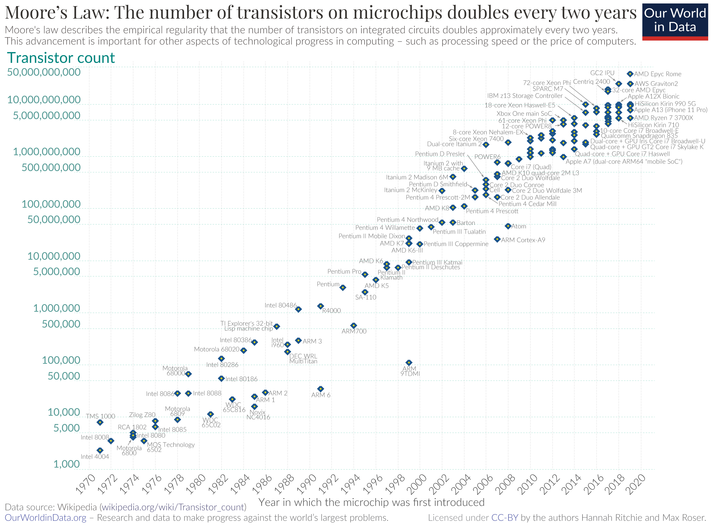
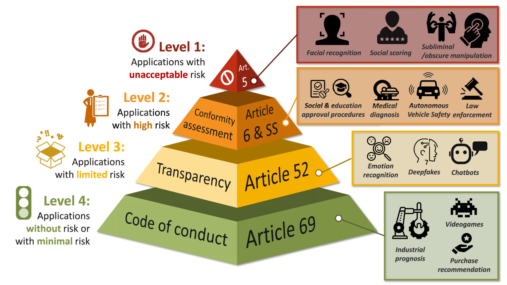

Artificial Intelligence
Nederlandse Spoorwegen
2011-11-03
Hoe vaak maak je gebruik van AI?

Mijn AI-gebruik deze ochtend
06:00
Telefoon ontgrendelen 
06:01
Slaapanalyse bekijken
06:50
Gelezen tekst samenvatten
07:45
Treinreis plannen o.b.v. drukte
07:50
Inschatten OV-fiets beschikbaarheid
Mijn AI-gebruik deze ochtend
07:55
Geprioriteerde emails lezen
08:00
Stofzuigerrobot aanzetten
08:00
Dweilrobot configureren
08:10
Aanbevolen muziek luisteren
08:15
Fietsen vastleggen
Als je Google producten gebruikt, gebruik je AI
Van breinen naar treinen
Breinen
| Wat | Waar | Wanneer |
|---|---|---|
| BSc Biomedical science | VU Amsterdam | ’01 - ’04 |
| MSc Neuroscience | VU Amsterdam | ’04 - ’06 |
| PhD Cognitive Neuroscience: analyse breindata | Utrecht University | ’06 - ’11 |
| Postdoc 1 Cognitive Neuroscience: modelen van breindata | Vanderbilt University | ’11 - ’14 |
| Postdoc 2 Cognitive Neuroscience: modelen & analyse van breindata | Radboud University | ’14 - ’19 |
Treinen
| Wat | Waar | Wanneer |
|---|---|---|
| Data Scientist | Nederlandse Spoorwegen | ’19 - nu |
| Data Science Tech Lead | Nederlandse Spoorwegen | ’22 - nu |
Wat is AI?
AI: nabootsen van menselijke vaardigheden door machines
| Menselijke vaardigheid | AI discipline |
|---|---|
| Visuele waarneming | Computer vision |
| Auditieve waarneming | Speech recognition |
| Leren en besluiten | Machine learning |
| Taalverwerking | Natural language processing |
| Motor / actie planning | Robotics |
Specifieke versus generieke AI

Bron: [UnicMinds(https://unicminds.com/true-general-ai-has-to-self-learn-not-only-to-do-something-it-is-programmed-for/)]
AI-toepassingen vallen grofweg in 7 categorieën
Bron: https://www.cognilytica.com/the-seven-patterns-of-ai/
AI-toepassingen vallen grofweg in 7 categorieën
Bron: https://www.cognilytica.com/the-seven-patterns-of-ai/
AI-toepassingen vallen grofweg in 7 categorieën
Bron: https://www.cognilytica.com/the-seven-patterns-of-ai/
AI-toepassingen vallen grofweg in 7 categorieën
Bron: https://www.cognilytica.com/the-seven-patterns-of-ai/
AI-toepassingen vallen grofweg in 7 categorieën
Bron: https://www.cognilytica.com/the-seven-patterns-of-ai/
AI-toepassingen vallen grofweg in 7 categorieën
Bron: https://www.cognilytica.com/the-seven-patterns-of-ai/
AI-toepassingen vallen grofweg in 7 categorieën
Bron: Cognilytica
Hoe werkt AI?
Een AI-oplossing bestaat uit drie elementen: data, model, interface
Een AI-oplossing bestaat uit drie elementen: data, model, interface
Een AI-oplossing bestaat uit drie elementen: data, model, interface
Een model moet worden getraind om patronen te leren herkennen
Een model moet worden getraind om patronen te leren herkennen
Een model moet worden getraind om patronen te leren herkennen
Een model moet worden getraind om patronen te leren herkennen

Een model moet worden getraind om patronen te leren herkennen
Een model moet worden getraind om patronen te leren herkennen
Een model moet worden getraind om patronen te leren herkennen
Een model moet worden getraind om patronen te leren herkennen
Waarom nu?
AI is eerder een grootse toekomst toegedicht
De opmars van AI: rekenkracht, datavolume, commercialisering, deep learning algoritmes



Bronnen: Our World in Data, First Site Guide, NVIDIA
Welke kansen biedt AI?
En voor wie?
Welke kansen biedt AI? En voor wie?
Welke kansen biedt AI? En voor wie?
Welke kansen biedt AI? En voor wie?
Welke kansen biedt AI? En voor wie?
Welke kansen biedt AI? En voor wie?
Wat zijn de risico’s van AI?
En hoe beperken we die?
Huidige AI-systemen kunnen een scala aan risico’s hebben
Gebrek aan transparantie
onuitlegbaarheid wekt wantrouwen en weerstand op
Cybercriminaliteit
AI misbruikt om beveiligings-maatregelen te omzeilen
Economische ongelijkheid
disproprotioneel voordeel voor rijke individuen en bedrijven
Desinformatie & manipulatie
vormen bedreiging voor de democratie
Vooroordelen, discriminatie
instandhouding en versterking
Concentratie van macht
AI ontwikkeling wordt gedomineerd door big tech
Juridische kaders
m.b.t. aanprakelijkheids en intellectueel eigendom
Onvoorziene gevolgen
compolexe AI systemen onverwacht gedrag vertonen
Privacyschending
verzameling van veel persoonsgegevens
Overmatige afhankelijkheid
verlies van creativiteit, kritisch denkvermogen
AI-wapenwedloop
ontwikkeling en gebruik van AI om schade aan te richten
Ethische dilemma’s
morele waarden verwerken in AI systemen is ingewikkeld
Banenverlies
door automatisering van werkzaamheden
Sociale afstomping
verminderde empathie, sociale vaardigheden
Bron: Bernard Marr @ Forbes
Vooroordelen en discriminatie
Bron: British Medical Journal Meer informatie: World Economic Forum, Ionica Smeets over de zelfversterkende feedbackloop
Desinformatie: we kunnen niet meer vertrouwen op onze ogen
Gebrek aan transparantie
De AI-verordening: de allereerste uitgebreide AI-wet ter wereld
Borgen van verantwoord AI-gebruik
Responsible AI principes
- Eerlijkheid
- Transparantie
- Uitlegbaarheid
- Mensgericht
- Waarborging van privacy en security
- Robuustheid
- Menselijk toezicht
Bron: Telefónica
Conclusie
Samenvatting
- Wat is AI?
- AI draait om het nabootsen van menselijke vaardigheden door machines.
- Categorieën van AI toepassingen: herkenning, mens-machine interactie, voorspelling & besluitvorming, doelgerichte systemen, autonome systemen, patroon- en anomaliedetectie, personalisatie
- Hoe werkt het?
- AI-systemen bestaan uit data, model, interface
- Modellen worden getraind om patronen te leren herkennen
- Wat verklaart de opmars van AI?
- Oorzaken van de huidige opmars van AI zijn krachtigere hardware, overvloed aan data, commercialisering, en nieuwe algoritmes
- Welke kansen biedt AI? En wie profiteren daarvan?
- AI kan fouten reduceren, efficiëntie vergroten, repetitief/gevaarlijk werk overnemen, maatwerk bieden, en is fulltime beschikbaar
- Mensen, bedrijven, en de samenleving als geheel kunnen profiteren van AI
- Welke risico’s kleven er aan AI? En hoe kunnen we die beperken?
- AI kent tal van risico’s en kan worden misbruikt
- De aanstaande EU AI-verordening en Responsible AI practices pogen deze risico’s te beperken